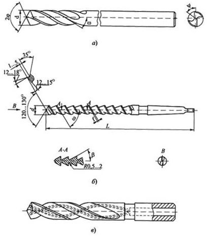
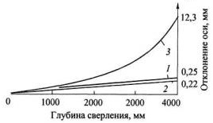
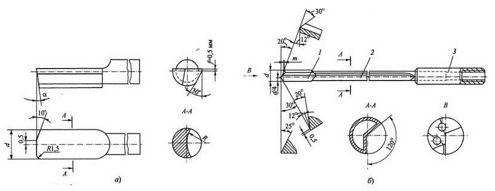

К глубоким отверстиям обычно относят отверстия, глубина которых превышает 5d. Однако уже при h>3d в случае сверления отверстий спиральными сверлами наблюдаются трудности с подводом СОЖ в зону резания и удалением стружки из отверстия, что приводит к снижению стойкости инструмента. Поэтому на практике применение инструментов для сверления глубоких отверстий обычно начинается с глубин, больших 3d.
Улучшить условия отвода стружки из отверстий при использовании спиральных сверл можно за счет увеличения угла наклона канавок до 40...60° и обеспечения надежного дробления стружки. В противном случае приходится периодически выводить сверло из отверстия для освобождения инструмента от стружки, что значительно снижает производительность, хотя при этом увод оси отверстия несколько уменьшается. Лучшие результаты дает использование внутреннего напорного подвода СОЖ в зону резания, которое обеспечивает не только надежный отвод стружки из отверстия, но и отвод тепла из зоны резания, благодаря чему повышается стойкость сверл. Причем эффективность СОЖ будет тем выше, чем выше скорость ее протекания через зону резания, которая определяется давлением и количеством (расходом) подаваемой жидкости.
На практике при сверлении отверстий глубиной до 20d на универсальном оборудовании часто используют спиральные сверла удлиненной серии или с нормальной длиной режущей части и длинным хвостовиком (а), равным глубине отверстия. В этом случае для освобождения сверла от стружки в процессе сверления применяется автоматический ввод-вывод инструмента из отверстия.
С целью уменьшения увода оси отверстий у таких сверл рекомендуется вышлифовывать на спинках четыре ленточки и увеличивать насколько возможно диаметр сердцевины (а). Некоторые фирмы выпускают такие сверла с увеличенным объемом канавок и большимί углом их наклона к оси инструмента, доходящим до ω = 40°.
Для улучшения отвода стружки без вывода сверла из отверстия были предложены шнековые сверла (б), которые применяются чаще всего для сверления отверстий глубиной до (30..40)d в деталях из чугуна и других хрупких металлов. Для сверления отверстий в сталях шнековые сверла применяются значительно реже и при этом наблюдается повышенный увод сверла. В отличие от стандартных спиральных сверл, они имеют большой угол наклона винтовых канавок ω = 60°, увеличенный диаметр сердцевины do=(0,30...0,35)d. Полированные канавки имеют в осевом сечении прямолинейный треугольный профиль с рабочей стороной, перпендикулярной к оси сверла. Направляющие ленточки шнекового сверла примерно в 2 раза уже, чем у стандартных спиральных сверл. Так как угол ω у них очень большой, то для формирования рабочего клина с нормальным углом заострения необходима подточка по передней поверхности под углом γ = 12... 18°. Задний угол при плоскостной заточке α = 12... 15°. При этом заточка сверла существенно усложняется.
Для обеспечения надежного стружкодробления без вывода сверл из отверстия при одновременном повышении стойкости применяют также спиральные быстрорежущие сверла с каналами для внутреннего подвода СОЖ. В нашей стране такие сверла изготавливаются диаметром от 10 до 30 мм (в). Их недостатки - повышенная трудоемкость изготовления, необходимость иметь для подвода СОЖ специальные патроны и насосные станции, а также ограждения от сходящей стружки и брызг СОЖ.
Увод сверл с двумя симметрично расположенными главными режущими кромками происходит из-за малой жесткости консольно закрепляемых инструментов, неизбежных погрешностей заточки режущих кромок, при наличии разнотвердости заготовок по сечению и т.д.
Самым эффективным способом, позволяющим свести до минимума увод и повысить точность отверстий, является способ базирования режущей части инструмента с опорой на обработанную поверхность. С этой целью предусматривается такое расположение режущих кромок, когда заведомо создается неуравновешенная радиальная составляющая силы резания, прижимающая опорные направляющие корпуса к поверхности отверстия, которые обработаны впереди идущими режущими кромками. При этом засверливание должно производиться по кондукторной втулке или по предварительно подготовленному в заготовке отверстию глубиной (0,5... 1,0)d.
Худшие результаты дает третья схема, которая применяется в случаях сверления несимметричных заготовок с большой массой (например, корпусные детали).
Существует 2 типа специальных сверл для обработки глубоких отверстий: ружейные и пушечные.
Рабочая часть пушечного сверла представляет собой полукруглый стержень, плоская поверхность которого является передней поверхностью (а). На торце стержня создается режущая кромка, перпендикулярно оси сверла. Задняя торцевая плоскость сверла затачивается под углом а = 10 ... 20°.
Для лучшего направления сверло имеет цилиндрическую опорную поверхность, на которой срезаются лыски под углом 30—45° и делается обратный конус порядка 0,03—0,05 мм на 100 мм длины рабочей части. В результате этого уменьшается трение сверла о стенки обрабатываемого отверстия. Пушечное сверло работает в тяжелых условиях, имеет неблагоприятную геометрию передней поверхности, не обеспечивает непрерывного процесса резания, так как для удаления стружки приходится периодически выводить сверло из отверстия.
Ружейные сверла (б) в отличие от пушечных имеют внутренний канал для подвода СОЖ и прямую (иногда винтовую) канавку для наружного отвода пульпы (смесь стружки и СОЖ). Они применяются для сверления отверстий глубиной (5...100)d и диаметром 1...30мм. Первоначально ружейные сверла использовали для сверления стволов огнестрельного оружия. В настоящее время ружейные сверла получили широкое распространение во всех отраслях машиностроения, главным образом для сверления глубоких отверстий на специальных станках в условиях крупносерийного и массового производств. Благодаря оснащению твердым сплавом и внутренней подаче СОЖ они обеспечивают высокую производительность при сверлении отверстий с минимальным уводом оси при высокой точности (H8...H9) и низкой шероховатости поверхности отверстий (Ra 0,32...1,25).
Типовая конструкция ружейного сверла состоит из режущего твердосплавного наконечника 1 (б) с отверстием для подвода СОЖ, трубчатого стебля 2 из стали типа 30ХМА с V-образной канавкой для отвода стружки, полученной методом холодной пластической деформации, и цилиндрического хвостовика 3 для крепления на станке. Ружейные сверла диаметром менее 2 мм ряд зарубежных фирм изготавливает цельными твердосплавными.
Главная режущая кромка для снижения радиальной нагрузки - ломаная, состоит из двух полукромок с углами в плане φ1 = 30° и φ2 = 20°. Для восприятия суммарной радиальной нагрузки у сверл малых диаметров имеется опорная цилиндрическая поверхность, а у сверл d > 10 мм - две опорные направляющие, между которыми должен проходить вектор радиальной составляющей сил резания и трения.
Для снижения сил трения и во избежание защемления сверла в отверстии предусматривается обратная конусность по диаметру режущей части (наконечника) в пределах 0,06...0,10 мм на 100 мм длины. На вспомогательной режущей кромке оставляется цилиндрическая ленточка шириной 0,1...0,5 мм.
При заточке ружейного сверла (б) необходимо контролировать размер т, который, во избежание врезания торцов, направляющих в дно отверстия, должен быть не меньше двух-трех значений подачи сверла на один оборот. На переднем торце трубчатого стебля фрезеруется паз, в который припаивается твердосплавный наконечник. С противоположного конца стебель впаивается в цилиндрический хвостовик, имеющий диаметр на 6...10 мм больше, чем диаметр стебля.
Технические требования к изготовлению ружейных сверл весьма жесткие. Так, рабочая часть шлифуется с допуском по h5 или h6, а хвостовик - по h6. Радиальное биение наконечника относительно хвостовика не более 0,01...0,02 мм. При настройке операции необходимо обеспечить соосность шпинделя и сверла в пределах 0,01мм, а соосность кондукторной втулки и шпинделя станка - в пределах 0,005 мм.
Так как твердосплавные направляющие выглаживают поверхность отверстия, СОЖ должна быть только на масляной основе с противозадирными присадками (S, Cl, P). Применение эмульсий на водной основе приводит к затиранию направляющих и возникновению вибраций.
Давление и расход СОЖ зависят от диаметра сверла. Так, например, при малых диаметрах сверл давление СОЖ достигает 9...10 МПа. К числу недостатков ружейных сверл можно отнести "малые поперечную и крутильную жесткости из-за ослабленного канавкой стебля. По этой причине приходится снижать подачу, а следовательно, и производительность процесса сверления.